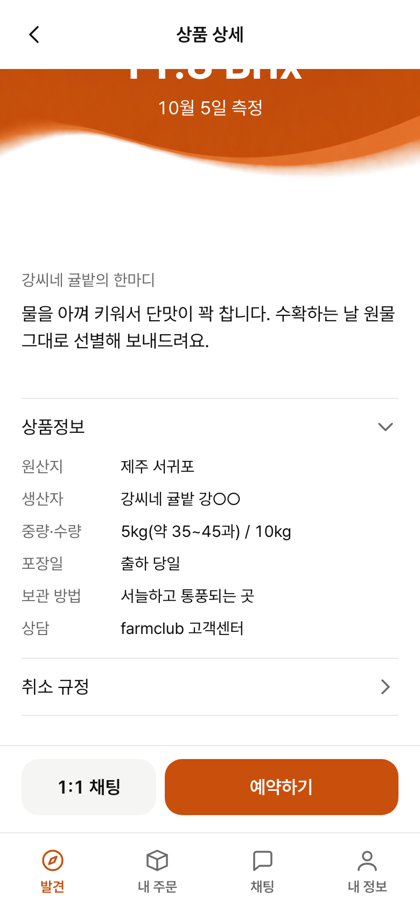
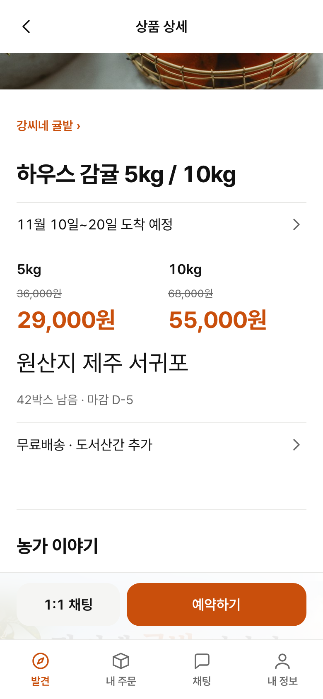
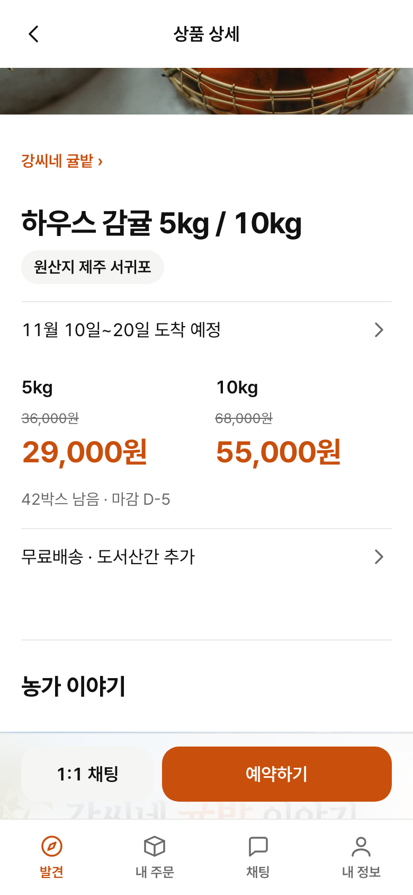
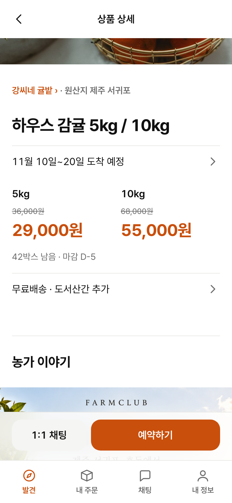
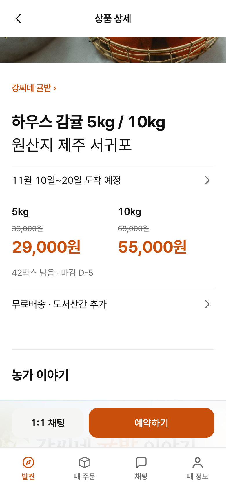
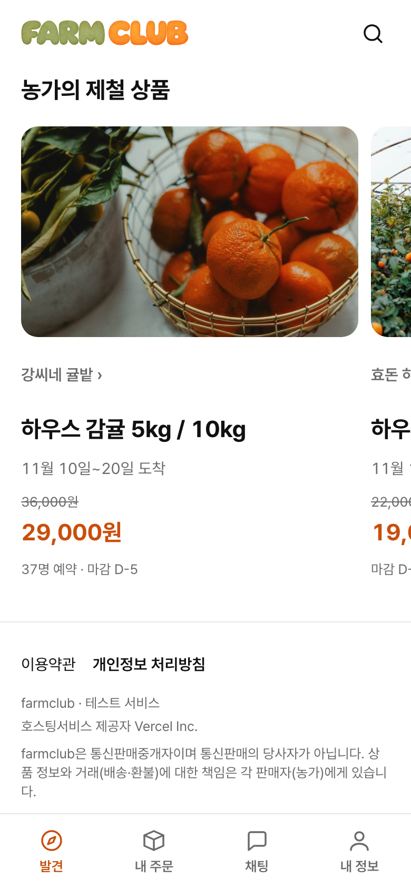
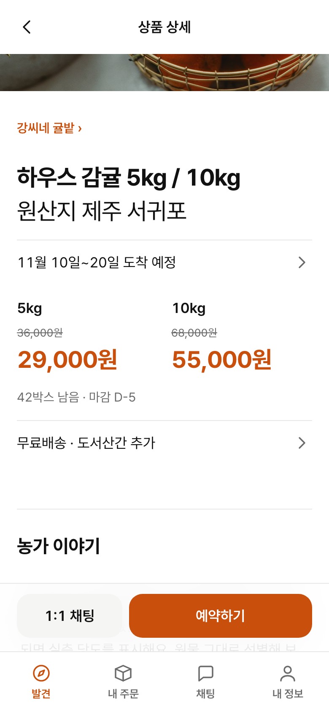
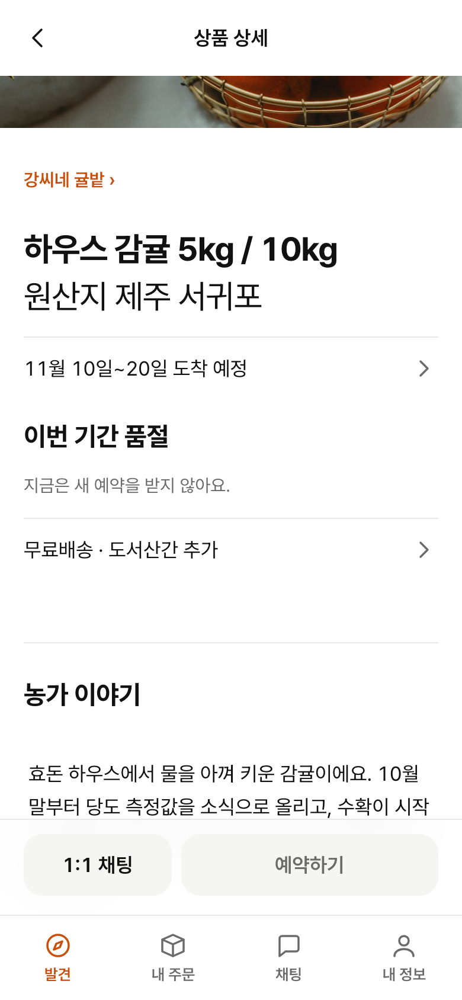
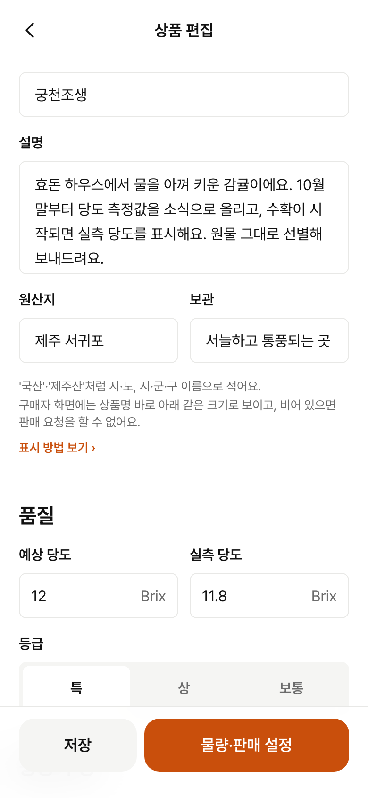

지금 상품 상세는 원산지를 화면 맨 아래 접힌 '상품정보' 표 안에만 보여 준다. 시행규칙 별표 3(통신판매)은 글자로 표시할 때 원산지를 상품명이나 가격 옆·위·아래에 붙이고, 글자 크기는 상품명이나 가격과 같거나 크게, 색은 같게, 제품이 화면에 보이는 때부터 표시하게 한다. 표시 의무는 판매자인 농가에 있지만 그 자리는 farmclub 화면이 만든다. 네 안을 실제 화면 위에 올려 비교했다. 왼쪽 BEFORE는 main을 로컬 Mock으로 띄운 캡처(:8258, 390×844), 시안은 같은 화면에 줄만 넣은 것이다. 상품·값은 Mock 시드다.
원문: 국가법령정보센터 「농수산물의 원산지 표시 등에 관한 법률 시행규칙」 [별표 3] (2026.10.22 개정). 국립농산물품질관리원 통신판매 원산지 교육 자료도 같은 네 가지(위치·같거나 큰 글자·같은 색·화면에 나타나는 때부터)를 든다.
title 28/36, 700, #111111title 28/36, 700, 강조 #C94F0C그래서 원산지 글자는 28 이상, 색은 상품명과 같은 #111111이어야 한다("또는"이라 상품명 하나와 맞으면 된다). 굵기는 법에 없으니 400으로 상품명(700)과 위계를 나눈다.

상품명·가격 근처에 원산지가 없다. 원산지는 농가 이야기·당도·한마디를 지나 맨 아래 '상품정보'를 눌러 펼쳐야 15 크기로 보인다.




| 안 | 위치 | 크기 | 색 | 좋은 점 | 걸리는 점 |
|---|---|---|---|---|---|
| A 가격 줄 바로 아래 「원산지 제주 서귀포」 | 맞음 가격 아래 | 맞음 28/36, 400 | 맞음 #111 (상품명과 같음) | 사려는 순간(가격) 바로 옆 | 옵션 두 열 가격 아래에 28 글자가 와서 가격과 다툰다. 품절·판매 중지면 가격 자리가 상태 이름으로 바뀌어 '가격 아래'가 흔들린다. 남은 박스 줄이 밀린다. |
| B 상품명 아래 배지 「원산지 제주 서귀포」 | 맞음 | 안 맞음 15 < 28 | 맞음 | 눈에 잘 띄고 깔끔 | 배지 글자를 28로 키우면 배지가 아니다. 칩은 D-day·품절만 쓰는 규칙(README)과도 어긋난다. |
| C 농가 링크 옆 「· 원산지 제주 서귀포」 | 상품명 위(붙어 있지 않음, 사이 16) | 안 맞음 15 | 안 맞음 보조색 | 화면 변화가 가장 작음 | 크기·색 모두 법 조건 미달. 28로 키우면 농가 링크 줄이 깨진다. |
| D 상품명 바로 아래 둘째 줄 「원산지 제주 서귀포」 | 맞음 상품명 아래, 사이 4 | 맞음 28/36, 400 | 맞음 #111 | 상품명과 한 덩어리로 읽힌다(이름 → 어디서 난 것). 품절·판매 중지·기간 공백에도 같은 자리. 가격 영역은 그대로. | 제목 덩어리가 36 높아진다. 원산지 값이 길면 두 줄. |
H1 상품명 바로 다음 줄, 사이 4(제목 덩어리 안). 화면 읽기는 「원산지 제주 서귀포」 한 문장. 상품명 줄 수와 무관하게 늘 그 아래.
title 28/36에 굵기 400. 크기·색이 법 조건을 바로 맞추고, 700 상품명과 400 원산지로 무엇이 이름인지 구분된다. 강조색은 쓰지 않는다(화면당 주요 버튼 하나 규칙).
「원산지 」 + info.origin. '국내산'을 화면이 자동으로 붙이지 않는다(표시 책임은 농가, 다른 값을 쓴 경우 거짓 표시가 될 수 있음). 시·도명이나 시·군·구명(예: 제주 서귀포)은 국산 농산물 원산지 표시로 쓸 수 있다.
표는 상품정보 제공 고시(생산자·중량·포장일 등) 역할이라 그대로 둔다. 같은 값이 두 번 보이지만 위는 원산지표시법, 아래는 고시용.
ProductPageBody를 생산자 상품 미리보기(DEV-184)가 같이 쓰므로, 농가가 게시 전에 이 줄을 본다. 편집 화면에서는 원산지 칸이 지금처럼 상품정보 슬롯에 있다.

판단 근거: 2호가목1)은 판매하는 제품의 표시를 상품명·가격을 기준으로 정할 뿐 목록 화면을 따로 말하지 않는다. 농관원 통신판매 교육 자료도 상품 페이지 상단과 상세 설명·상품정보 고시를 예로 들고 목록·검색 결과는 언급이 없다. farmclub 카드(홈 제철 상품, 검색 결과, 농가 페이지 판매 품목)는 옵션·수량을 고르거나 예약할 수 없고 상세로 가는 링크다. 예약은 상세에서만 시작된다.
남는 위험: '제품이 화면에 표시되는 때부터'를 목록까지로 읽으면 카드도 대상이다. 그때는 카드 상품명(22)·가격과 같은 22 이상이 필요해 카드가 크게 바뀐다(13 메타 줄로는 못 맞춘다). 그래서 카드는 이번 범위에서 빼고 따로 정한다.



| 문서 | 고칠 곳 |
|---|---|
| docs/spec/screens.md | SCR-04 화면 줄: 상품명 바로 아래 「원산지 ○○」(상품명과 같은 크기·색, 별표 3 2호가목1)). 상품정보 표 원산지 줄 유지. |
| docs/spec/policy.md | 3장 원산지 표시 줄·6장: 소비자 상품 화면 표시 자리와 크기 기준 한 문장, 목록 카드 판단. |
| docs/wiki/ | 영문 요약에 한 줄. |
| Figma v6 | SCR-04 프레임에 줄 추가. 못 하면 PR Figma: 줄에 후속 이슈. |
| 테스트 | Playwright 상품 상세 spec에 상품명 다음 원산지 줄이 보이고 글자 크기가 상품명 이상인지(computed font-size) 확인. typecheck. |